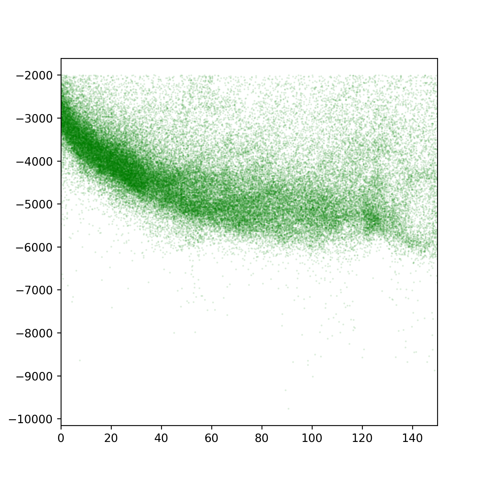

Introduction to Mantle Dynamics (EMSC 2022)
Contents
Introduction to Mantle Dynamics (EMSC 2022)¶
This section of the course introduces the dynamics of the circulation in the Earth’s mantle and how this relates to Plate Tectonic motions.
Lectures & Labs¶
The slides should be readable from your browser but
Lecture 1 - In which we examine the nature of convection as a phenomenon that transfers heat and generates motion. We will see how we can extract a single number that tells us almost everything about how / whether convection takes place … and we will calculate this for the Earth’s mantle.
Lecture 2 - In which we concern ourselves with the observation of signals from the convecting mantle at the surface of the Earth and, perhaps, of the other terrestrial planets. We will see how mantle convection naturally produces the pattern of heat flow in the oceans that we discussed in earlier lectures.

{kind=link}
Lab 1 - In which we try to obtain the sea-floor age / depth curve from data that we find online. This is in the form of a short series of jupyter notebooks that we will work through.
Concepts¶
The Earth’s Mantle is a heat engine that turns the energy from radioactive decay and from the formation of the planet into the mechanical work of plate motions.
We can quantify these motions by understanding fluid convection under different conditions.
Convecting fluids naturally produce boundary layers where adjustments occur between the bulk of the material and its boundaries.
Understanding the oceanic lithosphere as a boundary layer allows us to predict its thermal state and mechanical thickness quite well.
Our observational tests of the boundary layer approach is to predict the depth-age relationship for the sea-floor.
Resources¶
All of the material for this course is online and released as open-source or creative-commons where possible. Where we do not own the material that we use, we try to provide it through links to the original site or we provide references to the published material.
Highly viscous flow¶
University of Queensland Pitch Drop Experiment is the longest running lab experiment in the world. It was set up to demonstrate creeping viscous flow and inadvertently demonstrated the effect of temperature on viscosity.
The Boston Molasses Flood - Gravity currents, highly viscous flow and temperature dependent viscosity. An interesting video about viscous flow that might give you some intuition into viscosity.
Heat transfer¶
Background discussion on heat transfer with that illustrates conduction, convection and radiation using real-world examples and thermal imaging video.